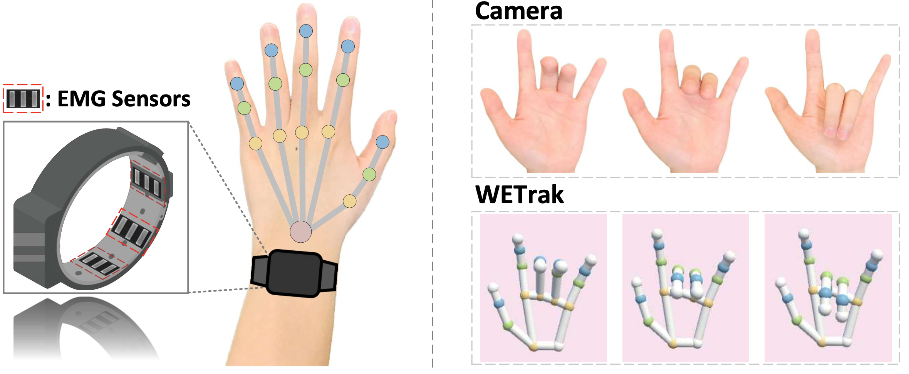
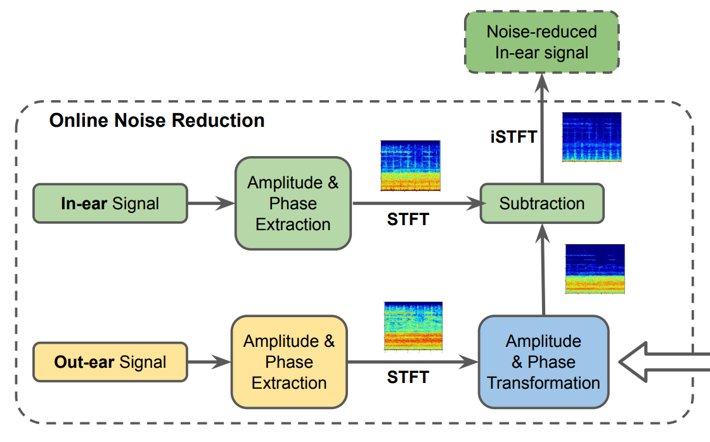
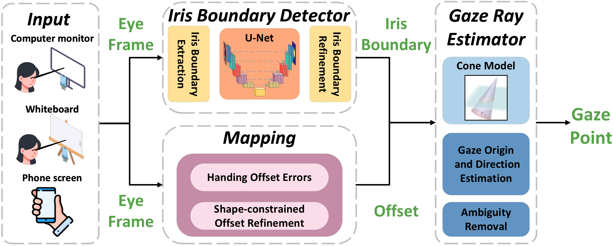
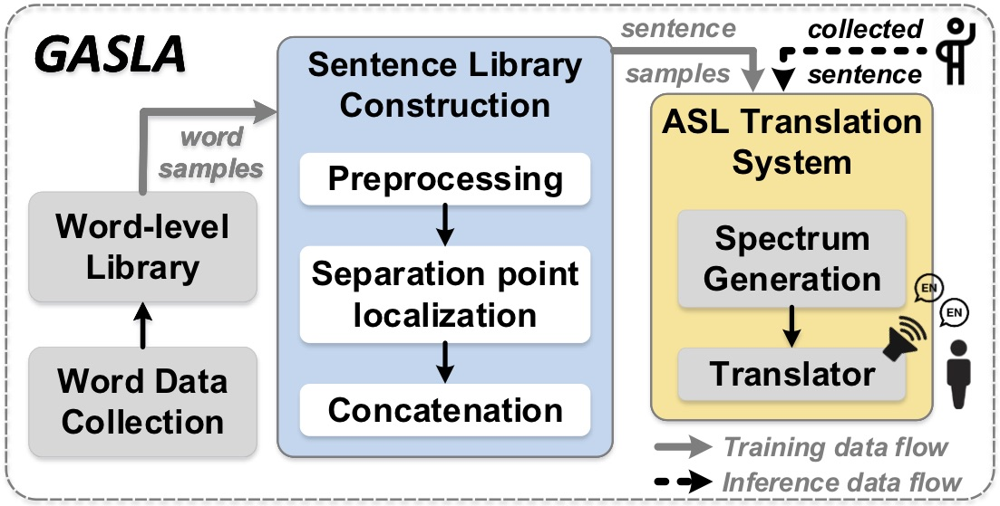
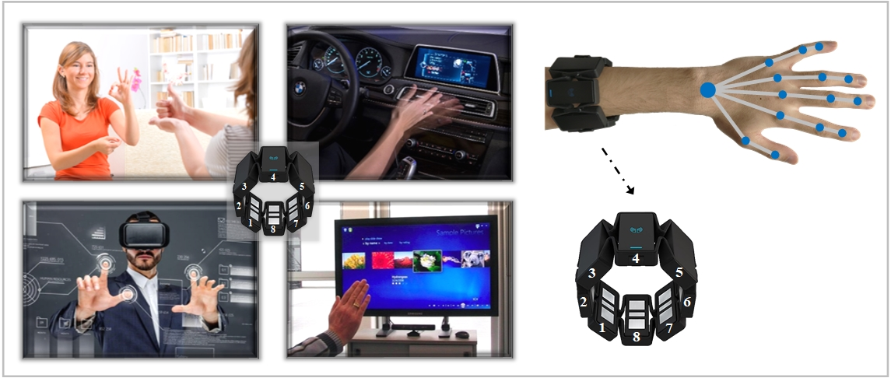
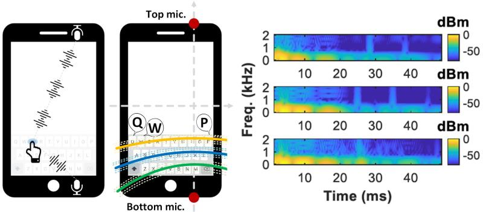
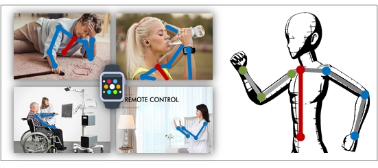
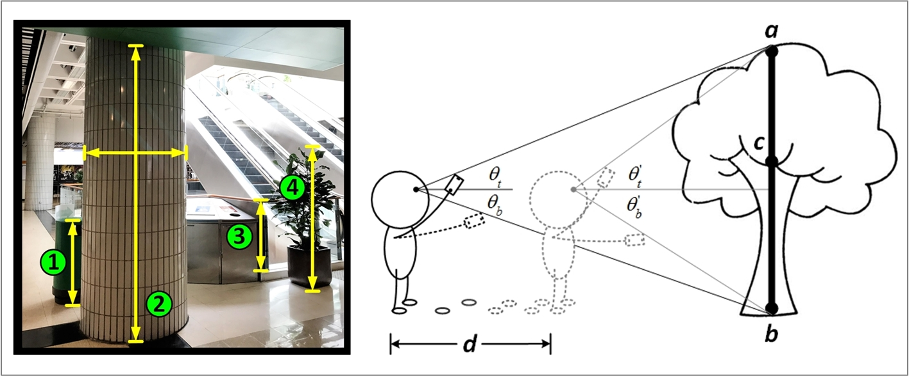
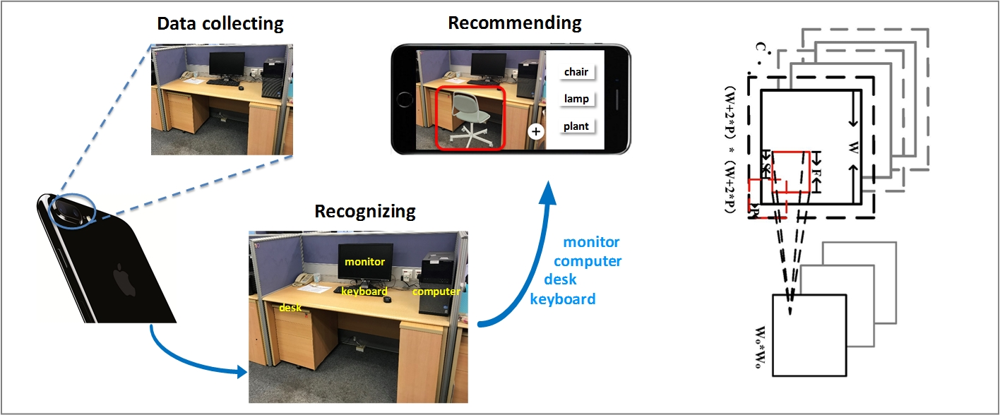
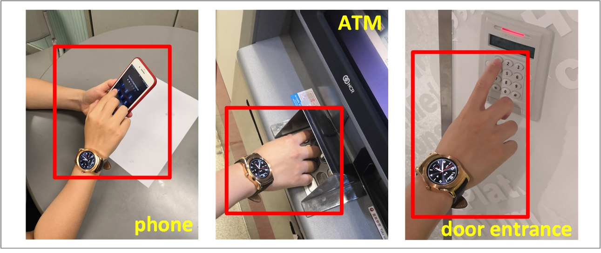

Finger Tracking Using Wrist-Worn EMG Sensors
Jiani Cao, Yang Liu, Lixiang Han, Zhenjiang Li
Senior Research Associate & Affiliated Lecturer
Department of Computer Science and Technology
University of Camdridge
Post-Doctoral Affiliation
Newnham College
I am currently a Senior Research Associate working with Prof. Cecilia Mascolo and an Affliated Lecturer at the Department of Computer Science and Technology, University of Cambridge. Prior to that I was a postdoctoral researcher working with Prof. Zhenjiang Li at City University of Hong Kong (from Oct 2020 to Dec 2021). I received the B.E. degree in Software Engineering from Xi'an Jiaotong University, Shaanxi, China in 2016 and the Ph.D. degree in Computer Science advised by Prof. Zhenjiang Li from City University of Hong Kong, Hong Kong, China in 2020.
My research is centered on developing intelligent mobile and wearable sensing technologies for human-centric computing. Currently, I am particularly interested in investigating earable sensing technologies for tracking human fitness. This involves vital signs perception via ear-worn sensors and applying novel signal processing and machine learning techniques. I am also exploring mobile and wearable technologies for sensing and understanding human behaviors. Overall, my research supports applications in mobile health, human-computer/environment interactions, and cybersecurity.

Jiani Cao, Yang Liu, Lixiang Han, Zhenjiang Li






Yang Liu, Zhenjiang Li, Zhidan Liu, Kaishun Wu

Yang Liu, Yonghang Jiang, Zhenjiang Li, Jianping Wang

